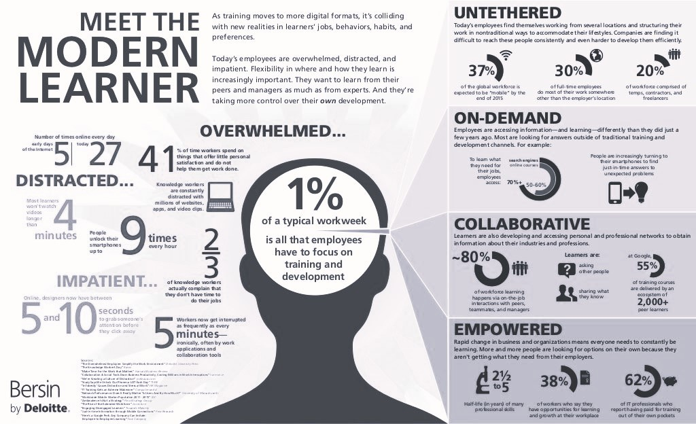

The essential meaning of the concept of andragogy has to do with adults. The Greek, ander (genitive andros), means "man", while agein means "to lead"; so andragogy means "leading men," which can be paraphrased as "leading adults". Knowles defined andragogy as "the art and science of helping adults learn". So who are these adult learners?
Specific traits of Adult Learner
In the 1970s, Malcolm S. Knowles developed a model to explain the characteristics of learning in adults based in the following assumptions:
The need to learn
Adults need to know why they need to learn something before undertaking to learn it. They need to know how learning will be conducted, what learning will occur and why learning is important. The pedagogical implications of this assumption are that:
It is important to know and understand the learner's expectations and needs through needs assessments (an evaluation of what the learner needs to know about the subject matter, performed prior to the teaching intervention by asking teachers and/or students). These allow for appropriate planning, in order to avoid the mistake of teaching content so basic that students already know it (the lecture is viewed as a waste of time) or so difficult that they find it impossible to understand (they lack the knowledge base to understand the content) or they find it irrelevant to their needs.
It is fundamental to introduce goals and objectives at the beginning of the lecture - what learners will be able to know or do with the knowledge acquired during the lecture.
It is good practice to present an outline at the beginning of the lecture to give the learners a preview of what they will learn.
The learner's self-concept
Adults have the self-concept of being responsible of their own decisions and their own lives and consequently need to be considered by others as capable of self-direction. Teachers should help their adult students become self-directed learners: Learners that are able to control, motivate, supervise and adjust their own learning. Encouraging active learning (where students actively participate in their learning - through debates, questioning, case resolution) over passive learning (where students just sit back and expect to be 'fed' by the teacher) is one strategy for helping students make a transition from dependent to self-directed learners.
The role of learner's experiences
Adults come to learning situations with accumulated experience; therefore, in any group of adults there is a wide range of individual differences regarding background, learning styles, motivation, needs, interests and goals. Also, adults tend to develop mental habits, biases and assumptions that usually make them resistant to new ideas and alternative methods of learning.
This concept suggests the inclusion of techniques that take into consideration the learner's' experience. Group discussions, debates, case-based methods, etc., are examples of techniques in which students may evaluate, reflect and review their own experience in light of what is being taught. Additionally, constructivist learning theories suggest that new information must connect to previous knowledge in order to be understood, retained and then utilized.
Readiness to learn
Adults are ready to learn what they need to know to cope with the situations they face in their real lives. This principle supports the relationship between the content to be taught and the learner's developmental stage. For example, a lecture about phacoemulsification with premium intraocular lenses might not be relevant for first-year residents, although it would be useful for third-year residents.
Orientation to learning
Adults will be motivated to learn as long as they perceive the learning as useful to help them perform tasks or solve problems they face in their lives. They will learn more effectively when new knowledge, skills, attitudes and values are presented in the context of their application to real life situations.
This concept implies that the content of lectures should be relevant to what learners need to cope with in their daily practice. The instructor's experience on the subject matter (presented through personal stories or cases) adds to the relevance that the audience may find in the content.
Modern Adult Learner
The infographic below from Bersin by Deloitte has a number of interesting and relevant findings about modern version of an Adult Learner. The information is gathered from all types of adult workers. Let us take a look at the data to see how it should impact the way we learn and educate. Do you recognize yourself or your audience in it?

Source of image: https://blog.tcea.org/adult-learners/
Life Span Development of Adult Learner
Lifelong learning is knowledge-intensive and fluid. The clear divide between education followed by work is not as clear as it once was. As such, considerable theory and research has focused on life span development. Vygotsky called the difference between an individual's current level of ability and accomplishment and the individual's potential level the zone of proximal development. Learning stimulates awareness of potential and of the gap between current knowledge and skills and one's potential level. This awareness stimulates more mature, internal development processes. People become aware that they need to learn and they also become more aware of how they learn. As this occurs, they are likely to try more complex ways of learning that require deeper thinking and learning.
According to Kegan's model of life span development, a person moves to increasingly complex "orders of mind," deeper levels of self-understanding and awareness of how others see the world-qualitatively different levels of social construction:
Stage 1: Cognitive processes of a young child.Stage 2: Older children, teens, and some adults whose feelings are inseparable from those of others.Stage 3: ("Traditionalism") Teens and many adults who distinguish between their own and others' viewpoints but feel responsible for others' feelings. As such, they are terrific team players. More than 50% of all adults do not proceed beyond this third stage.Stage 4: ("Modernism") People who have a sense of self that is separate from a connection to others. They are autonomous and self-driven, self-governing and principled, but they do not quite understand the limits of self-governing systems.Stage 5: ("Postmodern") People who come to recognize the limits of their own system of principles - a stage of cognitive development that happens before midlife, if it is reached at all.
Other stage models focus on ages and related life and career transitions. Hall's career growth curve distinguishes between:
exploration and trial (between ages 15 and 30)
establishment and advancement (ages 30-45)
continued growth, maintenance, or decline and disengagement (after age 45)
Levinson's career growth curve distinguished between:
preadulthood (birth to about age 22), the formative period of defining and developing relationships and gaining a sense of self;
early adulthood (ages 17-45), when the individual defines and develops relationships and gains a sense of independence, the biologically peak years that may include the emergence of satisfaction from career advancement, creativitiy, and achievement of major goals or may be marked by disappointment and stress with overwhelming financial obligations, marriage problems, and parenting troubles;
possible midlife transition (ages 40-45), with a new sense of individuation and contentment;
middle adulthood (ages 40-65), with diminished biological capacity but potential for personally and socially satisfying life and mentoring others;
late adult transition (60-65 and beyond) with the potential for continued generative and reflective development, but for many, a time of physical or mental decline.
Do you recognize your life span stage and goals at the moment? How could it possibly change your approach to learning? How could it improve your learning style and patterns?
References
9 Tips To Apply Adult Learning Theory to eLearning - link
8 Important Characteristics Of Adult Learners - link